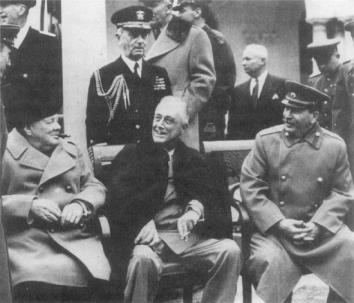

Churchill, Roosevelt ve Stalin Yalta’da, Şubat 1945
Hitler, Sovyetler Birliği’ne saldırdığı zaman, insanlık tarihinin en büyük kara savaşını da başlatmış oldu. Bundan önceki Avrupa savaşları ile kıyaslanamayacak barbarlık örnekleri, savaşın dehşetini, benzeri görülmemiş bir şekilde artırıyordu. Bu savaş, adeta bir soykırım kavgası idi. Alman orduları Rusya’nın içlerine doğru ilerlerken, Hitler, Birleşik Devletler’e de savaş ilan ederek, bir Avrupa savaşım global bir kavgaya, küresel bir çatışmaya dönüştürdü. Alman ordusu, Rusya’yı yerle bir ediyor, fakat öldürücü darbeyi bir türlü vuramıyordu. 1941 kışında, Moskova’nın varoşlarında durduruldular. Sonra, 1942-43 kışında, bu kez Güney Rusya’ya yönelen Alman saldırısı da durduruldu. Buzlarla kaplı Stalingrad’da yapılan şiddetli savaşta, Hitler, bütün Altıncı Ordu’sunu yitirdi. Alman savaşının beli kırılmıştı. Müttefik liderler –Churchill, Roosevelt ve Stalin– şimdi zaferi ve dünyanın geleceğini nasıl şekillendireceklerini düşünmeye başlayabilirlerdi.
Galiplerin her biri, kendi ulusal tarihi deneyimlerinin şartlarını ortaya koyuyorlardı. Churchill, Avrupa’da geleneksel güç dengesini yeniden kurmak istiyordu. Bu, Büyük Britanya, Fransa ve hatta yenilmiş Almanya’nın Birleşik Devletler’le birlikte doğudaki Sovyet devine karşı denge oluşturacakları anlamına geliyordu. Roosevelt’e göre, savaşın üç galibinin Çin’le birlikte dünyanın yönetim kurulu gibi hareket ederek, herhangi bir olası zalime (Roosevelt’e göre Almanya’ya) karşı barışı korumaları gerekiyordu. Bu görüş “dört polis” görüşü diye tanınır. Stalin’in yaklaşımı, hem komünist ideolojiyi, hem de geleneksel Rus dış politikasını yansıtıyordu. Savaşta kazandığı zaferin bedelini hemen almak için Orta Avrupa’ya doğru Rus nüfuzunu genişletmek istiyordu. Niyeti, Sovyet orduları tarafından ele geçirilen ülkelerin Rusya’yı gelecekteki bir Alman saldırısından korumak için tampon bölgelere dönüştürülmesiydi.
Roosevelt, bir Hitler zaferinin Amerikan güvenliğini tehlikeye sokacağını söylerken, halkının ilerisinde bir lider olduğunu göstermişti. Fakat Avrupa diplomasisinin geleneksel dünyasını reddetmekle de halkıyla birlikteydi. Bir Nazi zaferinin Amerika’yı tehdit edeceği üzerinde ısrarla dururken, aynı Amerika’nın, Avrupa güç dengesini yeniden kuracağını düşünmüyordu. Roosevelt’e göre, savaşın amacı, denge üzerine değil de, uyum üzerine kurulacak bir uluslararası düzene karşı olan Hitler’i ortadan kaldırmaktı.
Bu yüzden Roosevelt, tarihin derslerini somutlaştırdığı iddia edilen gerçekler konusunda sabırsızlık gösteriyordu. Almanya’nın tamamen yenilmesinin bir boşluk yaratacağı ve bu boşluğun, savaştan galip çıkan Sovyetler Birliği tarafından doldurulmaya çalışılacağı düşüncesini kabul etmedi. Galipler arasında olası bir savaş sonu rekabetine karşı önlem alma taleplerini reddetti. Çünkü böyle bir durum güç dengesinin yeniden kurulması demekti ki, gerçekte bu dengeyi yıkmak istiyordu. Barış, savaş zamanı Müttefiklerinin, karşılıklı iyi niyet ve dikkatliliğe dayanan uyumuyla korunan ortak güvenlik sistemi ile sağlanacaktı.
Evrensel barış durumu dışında korunması gerekecek bir denge olmayacağına göre, Roosevelt, Almanya’nın yenilmesinden sonra Birleşik Devletler’in askeri kuvvetlerini Amerika’ya geri çağırmaya karar vermişti. Roosevelt’in, Amerikan kuvvetlerini Avrupa’da devamlı olarak üslendirmek niyeti yoktu; Sovyetlere kaşı denge oluşturmak için bunu yapmayı ise Amerikan kamuoyunun desteklemeyeceği görüşündeydi. Amerikan birlikleri Fransa’ya ayak basmadan önce, 29 Şubat 1944’te Churchill’e şöyle yazıyordu:
“Lütfen benden herhangi bir Amerikan kuvvetinin Fransa’da bırakılmasını istemeyin. Bunu yapamam! Onların hepsini vatana geri getirmek zorundayım. Daha önce de söylediğim gibi, ben Belçika, Fransa ve İtalya’ya babalık yapmayı kabul etmiyorum. Kendi çocuklarınızı kendiniz yetiştirmek ve disiplin içinde tutmak zorundasınız. Gelecekte size destek olmaları isteniyorsa, şimdi hiç olmazsa onların okul masraflarını karşılamanız gerekir...”{502}
Başka bir deyişle, Büyük Britanya, Amerika’dan hiçbir yardım görmeden Avrupa’yı yalnız başına savunmak durumunda kalacaktı.
Aynı ruh hali ile Roosevelt, Avrupa’nın ekonomik kalkınması için herhangi bir Amerikan sorumluluğu kabul etmeyi de reddetti:
“Birleşik Devletler’in, Fransa, İtalya ve Balkanlar’ın savaş sonrası kalkınmasının yükünü taşımasını istemiyorum. 3500 mil uzakta olan bizim için, bu doğal bir görev değildir. Bu iş, bizim değil, burada hayati ilişkisi olan İngilizlerin işidir.”{503}
Roosevelt’in aynı anda Avrupa’nın hem savunmasını ve hem de kalkınmasını yapmasını İngiltere’den istemesinden, Büyük Britanya’nın savaş sonu olanaklarını, olduğundan çok fazla tahmin ettiği anlaşılıyor. Büyük Britanya’nın bu plandaki yeri, Roosevelt’in Fransa’ya karşı duyduğu hor görme dolayısıyla biraz şişirilmişti. 1945 Şubat’ında Yalta’da, galipler arasındaki en önemli konferansta, Roosevelt, Stalin’in de hazır bulunduğu bir toplantıda, Churchill’i, Fransa’yı “yapay olarak” büyük bir devlet yapmak için çaba harcamasından dolayı paylamıştı. Böyle bir çabanın anlamsızlığı daha fazla bir açıklama gerektirmezmiş gibi, Churchill’in, Fransa’nın doğu sınırı boyunca bir savunma hattı oluşturarak İngiliz ordusunu onun arkasına koymak olarak tanımladığı niyeti ile alay etti.{504} O sırada, Sovyet yayılmacılığına karşı akla gelen tek önlem buydu.
Roosevelt, Amerika devamlı bir rol almaya hazır değilken, galip Müttefikleri, Almanya’nın silahtan arındırılmasını, bölünmesini ve çeşitli ülkelerin kontrolü altında tutulmasını istedi. (Şaşılacak şey, Roosevelt’in kontrol altında tutulacak ülkeler arasında Fransa’yı da saymış olması idi.) 1942 yılının baharı gibi erken bir tarihte, Sovyetler Birliği Dışişleri Bakanı Molotov’un bir Washington ziyareti dolayısıyla, Roosevelt, savaş sonrası dünyasında barışı kurmak için “Dört Polis” düşüncesinin ana hatlarını anlatma fırsatını buldu. Harry Hopkins, Başkan’ın düşüncelerini Churchill’e yazdığı bir mektupta şöyle özetliyordu:
“Roosevelt Molotov’a, yalnız büyük devletlere –Büyük Britanya, Birleşik Devletler, Sovyetler Birliği ve Çin’e– silahlara sahip olma izni verilmesini öngören bir sistem anlattı. Bu “polisler” barışı korumak için birlikte çalışacaklardır. “{505}
Son olarak Roosevelt, İngiliz ve Fransız sömürge imparatorluklarına da bir son vermekte kararlıydı:
“Savaşı kazanınca. Birleşik Devletler’in, Fransa’nın emperyalist emellerini tatmin etmek veya İngiliz İmparatorluğu’na kendi imparatorluk arzularını gerçekleştirmesinde yardım etmek veya cesaret vermek konularında herhangi bir planı kabul etmek durumunda kalmaması için bütün gücümle elimden geleni yapacağım.”{506}
Roosevelt’in politikası, Amerika’nın geleneksel farklı olma duygusu, Wilsoncu idealizm ve kendisinin Amerikan psikolojisini çok iyi anlamış olmasının çok iyi bir karışımıydı. Amerikan psikolojisi, kazançlar ve kayıplar üzerinde ince hesaplar yapmaktan çok, evrensel amaçlara karşı daha duyarlıydı. Churchill, Sovyetlerin yayılmacılığına karşı Büyük Britanya’nın kendi başına karşı koyabilecek güçte büyük bir devlet olduğu imajını vermekte çok başarılı olmuştur. Çünkü ancak böyle bir inanç, Roosevelt’in, Amerikan birliklerinin denizaşırı ülkelerden geri çağrılması, silahtan arındırılmış bir Almanya, ikinci sınıf devlet statüsüne düşürülmüş bir Fransa ve önünde doldurulacak büyük bir boşluk bırakılan bir Sovyetler Birliği’nden oluşan bir dünya düzenini savunmasını açıklayabilir. Böylece, savaş sonrası dönem, Amerika’ya, yeni güç dengesi için ne kadar gerekli olduğunu öğretmek için iyi bir egzersiz olmuştur.
Roosevelt’in küresel barışı sağlamak ve güvence altına almak konusunda öne sürdüğü Dört Polis planı, Churchill’in geleneksel güç dengesi yaklaşımı ile Dışişleri Bakanı Cordell Hull’ın temsil ettiği ödün vermeyen Wilsonculuk arasında bir uzlaşmayı yansıtmaktadır. Roosevelt, Milletler Cemiyeti’nin ve savaştan hemen sonra kurulan sistemin noksanlık ve kusurlarından kaçınmakta kararlıydı: Bir çeşit ortak güvenlik istiyordu; ancak 1920’lerin deneyimlerinden, bu sistemin uygulayıcılara gereksinimi olduğunu biliyordu ve bunu da Dört Polis’in yerine getirebileceğini düşünüyordu.
Roosevelt’in Dört Polis kavramı, Amerikalı liberaller bu düşünceden dolayı dehşete düşebilirlerse de, yapı itibariyle Metternich’in Kutsal İttifak’ına çok benziyordu. Her sistem, paylaşılan değerleri üstün tutarak galiplerin koalisyonu yoluyla barışı korumak için gösterilen bir çabayı simgelemektedir. Metternich’in sistemi işledi, çünkü gerçek bir güç dengesini koruyordu; anahtar ülkeler ortak değerleri benimsiyordu ve her ne kadar Rusya bazen anlaşmazlık çıkarıyor idiyse de, genellikle işbirliği yapıyordu. Roosevelt’in kavramı uygulanamadı; çünkü savaştan gerçek bir güç dengesi ortaya çıkmamıştı, galipler arasında derin bir ideolojik uçurum vardı ve Almanya tehdidinden kurtulan Stalin, eski müttefikleri ile çatışmayı da göze alarak Sovyet ideolojik ve politik çıkarlarının peşinden koşmaktan vazgeçmiyordu.
Roosevelt, kendisine polislik görevi verilen devletlerden biri bu rolü oynamayı reddederse, hele de bu devlet Sovyetler Birliği ise ne olacağını hiç düşünmedi. Çünkü, bu durumda aşağılanan güç dengesinin yeniden kurulması gerekecekti. Geleneksel dengenin unsurları sistemden ne kadar çok çıkarılırsa da yeni güç dengesini kurmak işi o kadar güçleşecekti.
Roosevelt bütün dünyayı araştırmış olsa, Stalin kadar kendisine ters düşen başka bir muhatap bulamazdı. Roosevelt, Wilson’ın uluslararası uyum kavramını ne kadar çok uygulamak istiyorsa, Stalin’in dış politika yönetimi hakkındaki fikirleri de o kadar Eski Dünya Realpolitik’ine kayıyordu. Potsdam Konferansı’nda, bir Amerikalı General Stalin’e iltifat etmek için Rus ordularını Berlin’de görmenin ne kadar gurur verici olması gerektiğini söyleyince, Stalin’in tepkisi şöyle oldu: “Çar I. Aleksandr Paris’e ulaşmıştı.”
Stalin, barış koşullarını, yüzyıllardan beri Rus devlet adamlarının tanımladığı gibi tanımlıyordu: Sovyetler Birliği’nin geniş çevresi etrafında en geniş güvenlik kuşağını oluşturmak. Roosevelt’in kayıtsız şartsız teslim üzerindeki ısrarını destekledi; çünkü bu, Mihver Devletleri’ni barış antlaşmasında birer faktör olarak silecekti ve barış konferansında bir Alman Talleyrand’ının ortaya çıkmasını önleyecekti.
İdeoloji, geleneği kuvvetlendirdi. Bir komünist olarak, Stalin her ne kadar demokrasileri daha az haşin ve belki de daha az korkunç buluyorsa da, demokratik ve faşist devletler arasında herhangi bir ayrım yapmayı reddetti. Stalin’in kafasında, iyi niyet adına toprak elde etmekten veya o anın havası adına “objektif gerçeklikten vazgeçmesini mümkün kılacak bir kavramsal mekanizma yoktu. Bu nedenle, demokratik müttefiklerine de, bir yıl önce Hitler’e yaptığı aynı öneriyi götürmesi kaçınılmazdı. Hitler’le işbirliği Nazilere daha sempatiyle bakmasına neden olmadığı gibi, demokrasilerle ittifakı da onu özgür kurumların erdemini takdir etmeye ikna edemedi. Her geçici ortaktan diplomasi kanalıyla ne koparabilirse onu koparır ve karşılıksız olarak kendisine verilmeyenleri de, savaşa neden olmadığı sürece, kuvvet kullanmak suretiyle alırdı. Stalin’in yol gösterici yıldızı, komünist ideolojinin prizmasından yansıyan Sovyet ulusal çıkarı olmuştur. Palmerston’un sözleriyle, onun dostları yoktu, yalnızca çıkartan vardı.
Stalin, askeri durumunun en zor olduğu dönemlerde bile savaş sonrası hedeflerin görüşülmesine daima istekli ve hazırlıklı olmuştur. 1941 Aralık’ında, bıçak boğazına dayanmış durumdayken Dışişleri Bakanı Anthony Eden’in Moskova’yı ziyareti sırasında böyle yapmıştı; yine 1942 Mayıs’ında Molotov’u Londra ve Washington’a gönderdiği zaman da böyle hareket etmişti. Ancak bu çabalar, Roosevelt’in barış amaçlarının detaylı olarak tartışılmasına şiddetle karşı çıkması sonucunda engellenmiştir. Stalingrad Savaşı’ndan sonra, Stalin savaşın, kime ait olduğu tartışmalı topraklarını çoğunun Sovyetler Birliği’nin elinde olarak sonuçlanacağından emindi. Görüşmelerden gittikçe daha az şey elde eden Stalin, savaş sonrası dünyanın haritasına şekil vermeyi ordularının ulaştığı noktaya bıraktı.
Churchill, Stalin aslan payını alacak durumda değilken, savaş sonrası düzen hakkında Stalin’le görüşmelere başlamaya hazırdı. Stalin gibi yayılmacı müttefikler, İngiliz tarihinde çok görülmüştü ve birçok kez de yenilmişlerdi. Büyük Britanya daha güçlü olsaydı, kuşkusuz Churchill, tıpkı Castlereagh’ın Napoleon Savaşları’nın sonundan önce müttefiklerinin Benelüx Ülkeleri’nin özgürlüğünü tanımalarını sağlaması gibi, Stalin’den henüz yardıma gereksinimi varken, pratik anlaşmalar elde edebilirdi.
Churchill, diğer ortaklarından daha uzun süredir savaşın içindeydi. 1940 Haziran’ında, Fransa’nın düşüşünden bir yıl sonraya kadar Büyük Britanya, Hitler’e karşı tek başına kafa tutmuştu ve savaşın sonuçlarını belirleyecek bir durumda olmamıştı. Bütün enerjisini hayatta kalabilmek için harcıyordu ve savaşın sonucunun ne olacağı henüz belli değildi. Büyük Amerikan maddi yardımlarına karşın Büyük Britanya, kazanacağını ümit edemiyordu. Amerika ve Sovyetler Birliği savaşa girmemiş olsalardı, Büyük Britanya ya ödün vermeye zorlanacak veya yenilecekti.
Hitler’in 22 Haziran 1941’de Sovyetler Birliği’ne saldırması, Japonya’nın 7 Aralık 1941’deki Pearl Harbor baskını ve Hitler’in Birleşik Devletler’e savaş ilanı, savaş ne kadar uzarsa uzasın ve ne kadar acı verirse versin, Büyük Britanya’nın kazanan tarafta olmasını garantiledi. Churchill ancak bu andan başlayarak realist bir şekilde savaş sonuçları ile ilgilenebilirdi. Böyle yapmış olsaydı, Büyük Britanya geçmişinde benzeri görülmemiş bir iş yapmış olacaktı. Savaş devam ederken, Büyük Britanya’nın, Avrupa’da geleneksel dengeyi koruma amacının gittikçe elden kaçırıldığı ve Almanya’nın kayıtsız şartsız teslim olması sağlandıktan sonra Sovyetler Birliği’nin, özellikle de Birleşik Devletler kuvvetlerini çekerse kıtada egemen devlet olarak ortaya çıkacağı açıkça belli oldu.
Bu nedenle Churchill’in savaş zamanı diplomasisi, iki dev arasında manevra yapmaktan ibaretti. Aksi yönlerden olmakla beraber, her ikisi de Büyük Britanya’nın konumunu tehdit ediyordu. Roosevelt’in tüm dünyada self-determinasyon prensibini savunması, İngiliz İmparatorluğu’na yapılmış bir meydan okumaydı; Stalin’in Sovyetler Birliği’ni Avrupa’nın ortasına sokma projesi de İngiliz güvenliğini tehdit ediyordu.
Wilsoncu idealizm ile Rusya’nın yayılmacılığı arasında sıkışıp kalan Churchill, ülkesinin zayıf durumunu da göz önüne alarak İngiltere’nin eski politikasını uygulamak için elinden geleni yaptı: Eğer dünya en kuvvetli ve en acımasız olana terk edilmeyecekse, barış bir çeşit denge üzerine oturtulmalıdır. Churchill şunu da açıkça anladı ki, savaşın sonunda büyük Britanya artık hayati çıkarlarını bile tek başına savunamayacak haldeydi. Dışarıya karşı kendinden emin görünse de, Churchill, Büyük Britanya’nın Avrupa dengesini tek başına koruyabileceğine inanan Amerikalı dostlarından daha iyi biliyordu ki, ulusunun savaş zamanındaki rolü, gerçekten bağımsız küresel bir Büyük devlet olarak oynayacağı son rol olacaktı. Bu nedenle müttefik politikasının başka hiçbir yönü, Churchill için, Amerika ile Büyük Britanya’nın savaş sonrası dünyada tek başına kalmamasını sağlayacak kadar güçlü dostluk bağları kurmaktan daha önemli değildi. Böylece sonunda Amerikan tercihlerine boyun eğdi. Ancak çoğu zaman, Amerikalı ortağını, Washington’un stratejik çıkarlarının, Londra’nınkilere çok yakın olduğuna ikna etmeyi başardı.
Bu çok büyük bir işti. Çünkü Roosevelt ve arkadaşları, İngiliz niyetlerinden derin bir şekilde kuşku duyuyorlardı. Özellikle, Churchill’in her şeyden çok İngiliz ulusal ve imparatorluk çıkarları ile ilgilendiğinden ve dünya düzenine kendi yaklaşımlarından çok, güç dengesine taraftar olduğundan kuşkulanıyorlardı.
Diğer ülkelerin çoğu için, İngilizlerin ulusal çıkarları peşinde koşması doğal bir şey olurdu. Fakat Amerikan liderlerine göre, bu durum İngiliz karakterinde doğuştan var olan bir kusurdu. Pearl Harbor baskınından hemen sonra verilen özel bir akşam yemeğinde Roosevelt bunu şöyle ifade etti:
“Bu rol hakkındaki yaygın düşüncemiz tam anlamı ile objektif olmayabilir, İngilizlerin görüş açısından yüzde yüz doğru olmayabilir, ancak böyle düşünüyoruz. O’na (Churchill’e) bunu düşünmesi gerektiğini söylemeye çalıştım, İngilizlere bu güvensizlik, bu onlardan hoşlanmama ve hatta İngiltere’ye karşı nefret duyma, Amerikan geleneğinde vardır...”{507}
Roosevelt, Stalingrad’dan önce savaş sonuçlarını tartışmak istemediği için ve Stalin de savaş sonrası politik durum yerine, savaş hatlarının kararlaştırmasını yeğlediğinden, savaş sonrası düzen hakkında en çok fikir üreten lider Churchill olmuştur. Bunlara karşı Amerikan tepkisi, Dışişleri Bakanı Hull tarafından 1943 Kasım’ında geleneksel İngiliz gerçekleri hakkında hayli eleştirici bir terminoloji ile dile getirilmiştir:
“...acılı geçmişte ulusların güvenliklerini ve çıkarlarını ona karşı korumaya çalıştığı nüfuz kürelerine, ittifaklara, güç dengesine veya özel herhangi bir düzenlemeye artık gereksinim olmayacaktır.”{508}
Savaş boyunca Roosevelt, insani düzeyde hiçbir Amerikalıya yakın olmadığı kadar Churchill’e yakındı. Ancak belli sorunlarda Başbakan’a karşı Stalin’e karşı olduğundan daha sert olabiliyordu. Churchill’i bir askerlik arkadaşı gibi görüyor; Stalin’i ise, savaş sonrası barışı koruyacak bir ortak olarak düşünüyordu.
Amerika’nın Büyük Britanya’ya karşı beslediği karışık hisler üç sorun üzerinde odaklaşıyordu: Amerika’nın kendi geleneksel sömürge karşıtı düşünceleri; savaş stratejisinin doğası ve savaş sonrası Avrupası’nın şekli. Rusya’nın da büyük bir imparatorluk olduğu doğruydu; fakat onun sömürgeleri topraklarına bitişikti ve Rus emperyalizmi Amerikan vicdanında hiçbir zaman İngiliz sömürgeciliği kadar akis bulmamıştı. Churchill, Roosevelt’in, XX. yüzyılda İngilizlerin elinde bulunan topraklarla On Üç Koloni’yi karşılaştırmasından “neredeyse tüm maddi gerçeklerin farklı olduğu, farklı yüzyıllarda ve farklı sahnelerde ortaya çıkan durumların karşılaştırılmasının zorlukları nedeniyle”{509} şikâyetçiydi. Ancak Roosevelt tarihi benzetmeleri mükemmelleştirmekten çok, Amerikan prensiplerini ortaya koymakla ilgileniyordu, iki liderin Atlantik Beyannamesi’ni ilan ettikleri ilk buluşmalarında, Roosevelt beyannamenin yalnızca Avrupa’ya değil, sömürgeler dâhil her yerde uygulanmasında ısrar etti:
“Şuna kesinlikle inanıyorum ki, eğer biz kalıcı bir barış istiyorsak, buna geri kalmış ülkelerin kalkınmasını da dâhil etmeliyiz... Faşist köleliğe karşı bir savaş yaparken, aynı zamanda bütün dünyadaki insanları geri sömürge politikasından kurtarmak için de çalışmayacağımıza inanamam.”{510}
İngiliz Savaş Kabinesi böyle bir yorumu kesin olarak reddetti:
“... Atlantik Beyannamesi… Nazi diktatörlüğünden kurtarmayı ümit ettiğimiz Avrupa ulusları ile ilgilidir ve İngiliz İmparatorluğu’nun içişlerine veya Birleşik Devletler’le örneğin Filipinler arasındaki ilişkilere karışmak amacı yoktur.”{511}
Filipinler’e gönderme yapılmasındaki amaç, Amerikan liderlerine bu tartışmada çok ısrar edilirse, Amerika’nın neyi kaybedeceğini göstererek Londra’nın Amerikan işgüzarlığı olarak gördüğü tavrı sınırlandırmaktı. Ancak tehdit işlemedi; çünkü Amerika neyi öneriyorsa onu yapıyordu ve tek sömürgesi olan Filipinler’e savaş sona erer ermez bağımsızlığını vermeye karar vermişti.
Sömürgecilik üzerinde yapılan İngiliz-Amerikan tartışmasının kolay kolay biteceği yoktu. 1942’deki bir Anma Günü konuşmasında Roosevelt’in yakın dostu ve sırdaşı Dışişleri Bakanı Yardımcısı Sumner Welles, Amerika’nın sömürgeciliğe tarihten gelen karşı çıkışını şöyle açıkladı:
“Bu savaş gerçekten insanların kurtuluşu için yapılan bir savaş ise, Amerikalıların dünyası dâhil olmak üzere, bütün dünyadaki halklara bağımsız eşitlik konusunda güvence verilmelidir. Bizim zaferimiz, yanında halkların özgürleştirilmesini de getirmelidir... Emperyalizm çağı son bulmuştur...”{512}
Roosevelt, bu konuşmanın hemen ardından Dışişleri Bakanı Hull’a bir not göndererek Welles’in sözlerinin geçerli olduğunu bildirmiştir. Bu davranış, dışişleri bakanı ile yardımcısı arasındaki ilişkilere olumsuz etki yapan bir davranış biçimiydi; çünkü bakan yardımcısının Başkan’la daha yakın ilişki içinde olduğunu gösteriyordu. Hull, bunun üzerine yardımcısının işine son verdi.
Roosevelt’in sömürgecilik hakkındaki görüşleri önceden biliniyordu.{513} Self-determinasyon arzusunun bir ırksal çatışmaya dönüşmemesi için, Amerika’nın sömürge bölgelerinin kaçınılmaz kurtuluşunda öncülük yapmasını istemiştir. Roosevelt, danışmanı Charles Taussig’e bu konuda şöyle itirafta bulunmuştur:
“Başkan, Doğu’daki kahverengi derili insanları düşündüğünü söyledi. Bu insanların sayısı bir milyar yüz milyondu. Birçok Doğu ülkesinde bir avuç beyaz insan tarafından yönetiliyorlar ve bundan hoşlanmıyorlar. Bizim amacımız, onların bağımsızlıklarına kavuşmalarına yardımcı olmak olmalıdır: Bir milyar yüz milyon olası düşman çok tehlikeli olabilir.”{514}
Sömürgecilik üzerindeki tartışma savaş sonuna kadar pratik bir sonuca varamazdı; o zaman da Roosevelt artık hayatta değildi. Fakat strateji konusundaki çatışma, savaş ve barış kavramları hakkındaki ulusal görüşlerin farklılığını ortaya koyarak hemen bir etki yarattı. Amerikalı liderler, askeri zaferin bir son olduğuna inanmak eğilimindeyken, İngiliz meslektaşları, askeri harekât ile savaş sonrası dünyası için belirli bir diplomatik plan arasında bağ kurmak peşindeydiler.
Amerika’nın en önemli askeri deneyimleri, sonuna kadar çarpışılan kendi iç savaşı ve Birinci Dünya Savaşı idi. Her ikisi de kesin zaferle sonuçlanmıştı. Amerikan düşüncesinde, dış politika ve strateji ulusal politikanın birbirini izleyen aşamaları olarak ayrı bölümlere ayrılmıştı. İdeal Amerikan evreninde, diplomatlar, stratejiden uzak dururlar ve askerler de diplomasi başladığı zaman görevlerini bitirirler. Öyle bir görüş ki, Amerika, bunun bedelini, Kore ve Vietnam savaşlarında çok pahalı ödedi.
Bunun tam tersi, Churchill için strateji ve dış politika çok yakın ilişki içindeydi. Büyük Britanya’nın olanakları Birleşik Devletler’den daha kısıtlı olduğundan, stratejistleri sonuçlar üzerinde olduğu kadar, araçlar üzerinde de odaklaşmak zorunda olmuşlardır. Birinci Dünya Savaşı’nda çok kan kaybettiklerinden, İngiliz liderler benzer bir başka katliamdan kaçınmaya kararlıydılar. Kayıpları en aza indirecek herhangi bir strateji onlar için çekiciydi.
Bu yüzden Amerika savaşa girer girmez, Churchill, Mihver Devletler’in yumuşak karnı dediği Güney Avrupa’dan saldırıya geçilmesini önerdi. Savaşın sonunda, Eisenhower’dan boşu boşuna Berlin’i, Prag’ı ve Viyana’yı Rus ordularından önce almasını ısrarla istedi. Churchill’e göre bu hedeflerin çekiciliğinin nedeni, ne Balkanlar’ın tehlikeli durumu (gerçekten de son derece zor bir arazi yapısı vardır), ne de Orta Avrupa başşehirlerinin askeri potansiyelleriydi; fakat savaş sonrası Sovyet nüfuzunu sınırlamakta faydalı olmalarından ileri geliyordu.
Amerikan askeri liderleri, Churchill’in önerilerine hiddete varan sabırsızlıkla tepki gösterdiler. Yumuşak karın stratejisini, kendi ulusal çıkarları uğruna Amerikalıları kullanmak için başka bir İngiliz oyunu olarak değerlendirerek, böyle bir ikinci derecede hedefler için insanların hayatlarını riske edemeyecekleri gerekçesi ile öneriyi reddettiler. Amerikan komutanları, ortak planlamanın başlangıcından itibaren Fransa’da bir ikinci cephe açmak için çok istekliydiler. Savaş tam bir zaferle sonuçlandığı sürece cephe hatlarının yerlerini önemli görmüyorlardı ve ancak bu şekilde bir hareketle, Alman ordusunun esas kuvvetlerini savaşa sokacaklarını ileri sürdüler. 1942’nin Mart’ında, İngilizlerin kendi ikinci cephe planlarına direnmelerine çok öfkelenen Birleşik Devletler Genelkurmay Başkanı General George Marshall, İngilizleri bir yıl önceki Avrupa’ya öncelik tanıyan ABC-1 kararını ters çevirerek esas Amerikan çabasını Avrupa’dan alıp Pasifik’e kaydırmakla tehdit etti.
Roosevelt burada, ülkesini savaşa götürürken olduğu kadar, kuvvetli bir savaş zamanı lideri de olduğunu gösterdi. Marshall’ı susturarak, kavga eden generallere Almanya’yı yenmenin önceliğinin ilk kararları olduğunu ve bunun Büyük Britanya’ya bir iyilik olmadığını, herkesin ortak çıkan olarak kabul edildiğini hatırlattı:
“Japonya’nın yenilişinin Almanya’nın yenilmesi anlamına gelmediğinin ve Amerika’nın bütün kuvvetlerini bu yıl veya 1943’te Japonya’ya karşı toplamasının. Almanya’nın, Avrupa ve Afrika’daki tam hegemonya kurma şansını artıracağının bilincinde olmamız çok büyük önem taşımaktadır... Almanya’nın yenilmesi, büyük olasılıkla bir kurşun atmadan veya bir hayat kaybetmeden Japonya’nın da yenilişi anlamına gelecektir.”{515}
Roosevelt, Churchill’in stratejilerinin çoğuna uygun hareket etti; fakat Balkanlar’a bir çıkarma yapılmasına karşı çıktı. Roosevelt 1942 Kasım’ında Kuzey Afrika’ya çıkarma yapılmasını destekledi ve Akdeniz’in güney kıyılarının ele geçirilmesinden sonra, 1943 baharında İtalya’yı savaş dışı bırakan İtalya çıkarmasını destekledi. Normandiya’da açılan ikinci cephe, ancak 1944 Haziran’ında gerçekleşebildi ki, o zaman da Almanya o kadar zayıflamıştı ki Müttefikler’in kayıpları çok az oldu ve kesin zafer de yakındı.
Stalin, Amerikan askeri liderleri kadar hararetle ikinci cepheyi savunuyordu, fakat onun nedenleri askeri olmaktan çok jeopolitikti. 1941’de kuşkusuz Almanya’yı Rus cephesinden bir an önce uzaklaştırmayı istiyordu. Gerçekte, askeri yardıma o kadar çok gereksinimi vardı ki, Büyük Britanya’dan bir askeri birliğin Kafkaslar’a gönderilmesini istemişti.{516} 1942’de, Güney Rusya’nın içlerine doğru Alman ilerlemesi sırasında ise, artık Müttefik birliğinden hiç söz etmese de bir ikinci cephenin açılması için ısrarlarına devam etti.
Stalin’in ikinci cephe istekleri, savaşın artık Almanya’nın aleyhine döndüğünün işareti olan 1942 sonlarındaki Stalingrad Savaşı’ndan sonra bile devam etti. Stalin için ikinci cepheyi bu kadar çekici kılan şey, onun Batı ve Sovyet çıkarlarının büyük olasılıkla çatışacağı Doğu ve Orta Avrupa ve Balkanlar’dan uzaklığı idi. Ayrıca kapitalistlerin bu savaştan yara almadan çıkmamalarını da güvence altına alacaktı. Stalin Batı’daki Müttefik planlamaları üzerinde söz sahibi olmakta ısrar ederken, demokrasilerin Sovyet planlaması hakkında en küçük bir fikir sahibi olmasını bile önlüyor, Sovyet birliklerinin dağılımı hakkında hiçbir bilgi vermiyordu.
Stalin, Fransa’da bir ikinci cephe açılmasını ısrarla isterken, otuz-kırk Alman tümeninin buraya çekileceğini bekliyordu ve olaylar öyle gelişti ki, Müttefikler İtalya’ya 33 kadar Alman tümeni çektiler.{517} Yine de Stalin, Güney stratejisine karşı protestolarına artırarak devam etti. Kendi görüş açısından bu stratejinin kusurlu tarafı, üzerinde Sovyet emelleri beslenen ülkelere coğrafi yakınlığı idi. Stalin, 1942 ve 1943’te bir ikinci cephe için bastırırken, Churchill de aynı sebeplerle bunu geciktirmeye çalıştı: Bu cephe, Müttefikler’i, politik anlaşmazlık konusu olan bölgelerden uzak tutacaktı.
Soğuk Savaş’ın sebepleri üzerinde yapılan tartışmalarda, Stalin’in Doğu Avrupa’daki inatlaşmasının nedeni olarak, daha önce bir ikinci cephenin geç açılması gösterilmektedirler. Bu mantığa göre, ikinci bir cephenin açılmasındaki gecikme, Sovyetlerin hiddetlenmesine diğer her şeyden daha çok neden olmuştur.{518} Ancak Hitler’le yeni pakt yapmış ve Nazi lideri ile dünyayı bölüşmek için anlaşmış olan ihtiyar Bolşevik’in, eğer Müttefikler’in politikası bu ise, Realpolitik nedeniyle “hayal kırıklığına uğratılacağını” düşünmek safdillik olur. Politik karşıtlarını yok etmek için temizlik mahkemelerini ve Katyn Ormanı katliamını organize eden bir kişinin, askeri ve politik hedefleri birbirine bağlamak yönündeki bir stratejik karar dolayısıyla inatlaşacağını hayal etmek oldukça zordur. Stalin, ikinci cephe kozunu da diğer şeyleri kullandığı gibi, soğukkanlılıkla, inceden inceye hesaplayarak ve gerçekçi bir şekilde kullandı.
Gerçekte genelkurmay başkanları, Amerikan politik liderliğinin zafer elde edilene kadar savaş sonrası dünya ile ilgili bütün tartışmaların ertelenmesi şeklindeki görüşünü yansıtmaktan başka bir şey yapmıyordu. Bu, savaş sonrası dünyasının kaderini belirleyen çok önemli bir karardı ve Soğuk Savaş’ı kaçınılmaz yapan da buydu.
Genel bir kural olarak, istikrar ve denge için çaba harcayan ülkeler, daha savaş devam ederken, kendi barış şartlarını gerçekleştirmek için güçlerinin yettiği her şeyi yapmalıdırlar. Düşman savaş alanında olduğu müddetçe, gücü dolaylı olarak daha barışçı tarafın ağır basmasını sağlar. Bu prensip ihmal edilirse ve ana sorunlar çözülmemiş olarak barış konferansına bırakılırsa, en kararlı devlet ödülleri toplar ve ancak büyük bir çatışmayla bu ödüller elinden alınabilir.
Savaş sonrası sonuçları üzerinde bir Müttefikler anlaşması veya hiç değilse bunların tartışılması, 1943 Ocak ayında Kazablanka’da Roosevelt ile Churchill tarafından ilan edilmiş olan kayıtsız-şartsız teslim politikası nedeniyle özellikle yapılması gereken bir şeydi. Roosevelt çeşitli nedenlerle bu politikayı önermişti. Almanya ile barış şartlarının önceden konuşulmasının, anlaşmazlık çıkaracağından korkuyordu ve Müttefikler’in bütün enerjisinin savaşı kazanmak noktasında odaklaşmasını istiyordu. Aynı zamanda Stalingrad Savaşı’nın acıları içinde kıvranan Stalin’e ayrı bir barış olmayacağı yönünde güvence vermek istiyordu. Fakat Roosevelt, her şeyden çok Almanya’nın yerine getirilmeyen vaatlerle kandırılarak savaşa son verildiği gerekçesiyle daha sonra yeniden Alman revizyonist istekleri ile karşılaşılmasına engel olmak istedi.
Bununla beraber Roosevelt’in, savaş devam ederken savaş sonrası dünyasının şekillendirilmesi konusunu tartışmaktan kaçınması, Amerika’nın geniş nüfuzunu, güç dengesi veya politik çözümler gibi herhangi bir kriter veya hayati elemandan yoksun bir sonucun arkasına koymuştur. Wilsoncu temel uyum varsayımına dayanan bütün sorunlarda, Roosevelt savaş sonrası dünyanın şekillendirilmesinde en büyük rolü oynadı. Savaş sonrası düzenin ortak elemanlarını belirleyen taslakları hazırlayan bir dizi uluslararası konferans onun koruması altında yapıldı: Birleşmiş Milletler için (Dumbarton Oaks’da), dünya finansmanı için (Bretton Woods’da) gıda ve tarım için (Höt Springs’de), yardım ve rehabilitasyon için (Washington’da) ve sivil havacılık için (Chicago’da) konferanslar yapıldı.{519} Fakat Sovyetlerle bu konuda anlaşmazlık yaratmamak için savaş sonuçlarını tartışmaktan kaçınmakta kararlıydı.
İlk önce, Stalin, Roosevelt’in, jeopolitik düzeyde savaş sonrası düzenlemeyi görüşmekten kaçınmasını, Sovyetlerin askeri güçlüklerini kötüye kullanmak için taktik bir manevra olarak yorumladı. Stalin’e göre, savaş, Mihver Devletler’in kaçınılmaz bir şekilde dağılmasının ardından ortaya çıkacak boşluktan yeni ve daha uygun bir güç dengesi yaratacaktı. Batı’nın nihai barış şartlarını, askeri harekâtın sonucuna bırakacağını beklemeyecek kadar geleneksel olan Stalin, 1941’in Aralık ayında Alman birlikleri Moskova’nın dış mahallerine doğru ilerlerken bile Eden’le savaş sonrası düzenleme için görüşmeye çalıştı. Stalin’in ilk sözlerinden, Atlantik Beyannamesi’nden bahsetmediği açıktı. Prensip deklarasyonlarının cebire benzediğini, hâlbuki kendisinin pratik aritmetiği yeğlediğini söyledi. Stalin, soyutlamalar üzerinde zaman harcamak istemiyordu ve toprak şeklindeki karşılıklı ödünler verilmesini tercih ediyordu.
Stalin’in aklındaki, basit, eski moda Realpolitik’ti. Almanya parçalanmalı ve Polonya batıya itilmeliydi. Sovyetler Birliği 1941 sınırlarına geri dönecekti ki, bunun anlamı, özellikle Polonya ile Curzon Hattı’nın sınır kabul edilmesi ve Baltık devletlerinin de elde tutulmasıydı ve bu durum, Atlantik Beyannamesi’nde ilan edilen self-determinasyon prensibinin açık ihlaliydi. Karşılığında, Büyük Britanya’nın hepsi de müttefiki olan Fransa, Belçika, Hollanda, Norveç ve Danimarka’da üsler kurmak istemesi halinde Sovyetler Birliği’nin buna destek olmasını öneriyordu.{520} Stalin durumu, bir XVIII. yüzyıl prensinin gördüğü gibi görüyordu: Ganimetler galibe aittir.
Diğer taraftan, Stalin, Doğu Avrupa ülkelerinin politik geleceği için henüz herhangi bir istekle bulunmuyordu; yalnızca Polonya’yla olan sınırda birkaç belirgin olmayan esnekliğe işaret etmekle yetinmişti. Ancak Büyük Britanya ilanından ancak üç ay geçmiş olan Atlantik Beyannamesi’ni toptan ihlal edemezdi. Amerikan liderleri de Birinci Dünya Savaşı diplomasisini mahveden gizli anlaşmalara dönülmüş gibi görünen böyle bir durumu kabullenemezlerdi. Böyle bile olsa, Stalin tarafından önerilen şartlar acımasız olmakla beraber, savaş sonucunda ortaya çıkacak olan durumdan yine de daha iyiydi ve görüşmelerle daha da iyileştirilebilirdi. Eden, Stalin’le konuştuklarını Churchill ve Roosevelt’e rapor edeceğini ve ondan sonra diyaloga devam edileceğini vadederek çıkmazdan kurtuldu.
Askeri durumunun çok kritik olmasına karşın, belki de bu yüzden, Stalin 1942 baharında tekrar konuya döndü. Churchill, Sovyetlerin quid pro quo’sunun ne olduğunu keşfetmek için 1941 sınırlarını tanımaya tamamen hazırdı. Fakat Roosevelt ve danışmanları, güç dengesi anlaşmalarına benzeyen düzenlemelerden kaçınılmasını salık vererek, savaş sonrası sorunlarının tartışılmasını reddetti. Hull, Roosevelt adına Churchill’e şunları yazdı:
“…bu durum, geniş temel politikamızı, ilkeleri ve uygulama ile ilgili bildirilerimizi terk etmek, şüpheli bir yön seçmek anlamına gelir. Bu iki önemli olayda, sizin önerdiğiniz gibi, bunlardan bir sapma yapılırsa, iki ülkeden hiçbirisi, dayanacakları herhangi bir nokta veya kendilerinin uygulayabileceği ve karşı taraftan ısrarla uygulanmasını isteyebilecekleri istikrarlı bir kural bulamazlar. “{521}
Stalin 1942 Mayıs’ında Molotov’u Londra’ya göndermek suretiyle konuyu yeniden ön plana getirmeye çalıştı. 1942 Nisan’ında yapılan hazırlık görüşmelerinde, Sovyet Büyükelçisi İvan Maisky, Stalin’in dört ay önceki şartlarını yeniden ortaya koydu.{522} Sovyetler Birliği şimdi savaş sonrası dönem için Romanya ve Finlandiya ile karşılıklı yardım anlaşması yapmak istiyordu. Alman ordularının o sıralarda Sovyetler Birliği’nin derinliklerinde olduğu düşünülürse, bu durum Stalin’in uzun vadeli amaçlarının bir başka belirtisi olarak ele alınabilir. Yine de belirtilmelidir ki, bunlar, savaş sonucunda henüz bir anlaşma yokken ortaya çıkan uydu kuşağına nazaran daha az isteklerdi.
Bu konuşmaları devam ettirmek isteyen Churchill, Washington’un sert muhalefetiyle karşılaştı. Hull, İngiliz-Sovyet temaslarını Atlantik Beyannamesi ve Amerika’nın kuvvet yoluyla toprak değişikliklerine tarihten gelen karşı görüşüne aykırı ve değerini yitirmiş, geçmişin güç politikasına geri dönüş olarak nitelendirdi.{523} Roosevelt, hemen hemen aynı içerikli bir mektubu da Stalin’e gönderdi. Stalin ters ve kısa bir notla Roosevelt’in mesajını aldığını cevap olarak bildirdi. Notta hiç görüş belirtilmemesi, mesajın hiç de iyi karşılanmadığının açık bir göstergesi idi. Aynı zamanda Churchill’e gönderilen bir notta, Stalin “Amerikan müdahalesine” aldırmamasını istiyordu.{524}
Savaşın başlarında, Stalin 1941 sınırları üzerinde bir düzenleme yapmaya açıkça istekliydi ve kendisinden quid pro quo olarak bir talepte bulunulmayacağını bilecek kadar kurnazdı. Hiçbir şey, tarihle ilgili olarak “Ah keşke şu da yapılsa idi” pişmanlığından daha değersiz değildir; Stalin’in ödemeyi göze aldığı bedel hiçbir zaman bilinemeyecektir; çünkü Roosevelt, Molotov’u Washington’a davet ederek İngiliz-Sovyet diyalogunu yarıda kesti.
Stalin Polonya sınırları sorunundaki esnekliğini, 1941 Aralık’ında Eden’in Moskova ziyareti sırasında buna “açık bir sorun”{525} diyerek göstermiş oldu. Stalin, 1941 sınırlarının tanınması karşılığında, sürgündeki Doğu Avrupa ülkeleri hükümetlerini tanımaya (henüz bunlara karşı çıkmamıştı) ve topraklarında Sovyet üsleri kurulmasına izin vermek şartıyla Baltık devletlerinin 1940’taki bağımsız statülerine kavuşmalarını kabul etmeye hazır olabilirdi. Bunun sonucunda Fin modeli Doğu Avrupa devletleri doğabilirdi: Sovyet güvenliğine saygılı, fakat aynı zamanda demokratik ve tarafsız bir dış politika izlemekte özgür devletler olurlardı. Hiç değilse Doğu Avrupa ülkelerinin, hatta sonuçta Sovyetler Birliği’nin halkları bugünkünden daha iyi bir durumda olurdu.
Molotov 1942 Mayıs sonunda Washington’a gelip de Amerika’nın Sovyetler Birliği’nden istediği şeyin, politik düzenlemeler değil, dünya düzenine yeni yaklaşım konusunda bir anlaşma olduğunu öğrenir öğrenmez bütün bu ihtimaller kayboldu. Roosevelt Molotov’a, Stalin’in (ve Churchill’in) nüfuz küreleri düşüncesinin Amerikan alternatifini sundu. Formül basitçe, Wilson’ın Dört Polis fikri ile biraz değiştirilmiş olan ortak güvenlik kavramına bir geri dönüştü. Roosevelt, böyle bir düzenlemenin Sovyetler Birliği’ni güvenlik bakımından geleneksel güç dengesinden daha iyi koruyacağını ileri sürdü.{526}
Roosevelt’in, Churchill’e böyle Makyavelci önerilerde bulunan Stalin’in, nasıl olup da dünya hükümetini cazip bulacağına inandığı anlaşılır gibi değildir. Belki Roosevelt, en kötü ihtimal gerçekleşir de Stalin işgal ettiği toprakları elinde tutmakta ısrar ederse, iç politika açısından bir fait accompli’yi kabul etmenin, şimdi savaşın askeri sonucu henüz tam olarak belli değilken, Stalin’in tekliflerini kabul etmekten daha iyi olacağını düşünmüş olabilir.
Roosevelt’in sömürgelerle ilgili sorunlarda daha somut önerileri vardı. “Zayıf ulusların elinden alınması kendi güvenliğimiz açısından gerekli olan” bütün eski sömürgeler için uluslararası bir vesayet sisteminin getirilmesini önerdi. Fransa da bu zayıf uluslar kategorisine dâhildi.{527} Sovyetler Birliği’ni de Vesayet Konseyi’nin kurucu üyesi olmaya davet etti.
Molotov bir filozof olsaydı, tarihin tekerrürden ibaret olduğunu düşünürdü; çünkü on sekiz aylık bir zaman dilimi içinde iki defa, hem de birbirine karşıt iki grup tarafından ittifak üyeliğine davet edilmişti: Hitler ve Ribbentrop tarafından, Almanya, İtalya ve Japonya’dan kurulu üçlü pakt üyeliğine ve Roosevelt tarafından, Birleşik Devletler, Büyük Britanya ve Çin’i içine alan bir koalisyona. Her iki davette de, davet edenler Molotov’u güneyde egzotik topraklarla kandırmaya çalıştılar: Berlin Ortadoğu’yu; Washington, sömürge vasiliğini önerdi. Bu önerilerin hiçbirinde, Molotov, Sovyet ordularının ulaşabileceği Sovyet hedeflerinin ele geçirilmesi amacından saptırılamadı.
Molotov, karşısındaki görüşmeciye göre taktiklerini değiştirmek gereksinimini de duymadı. Washington’da, tıpkı daha önce Berlin’de yaptığı gibi, önerilen düzenlemeye katılmayı prensip olarak kabul etti. Dört Polis’e katılma önerisi ile on sekiz ay önce katılmayı prensip olarak kabul ettiği grubun yeminli düşmanları ile bir arada olacağı gerçeği onu rahatsız etmedi. Molotov’un, Berlin’de olduğu gibi Washington’da da ilke olarak evet demesi, Stalin’in Avrupa’daki toprak taleplerinden vazgeçtiği anlamına gelmiyordu. Hem Washington’da, hem de Berlin’de, Molotov 1941 sınırlan, Bulgaristan, Romanya ve Finlandiya’da Sovyet nüfuzunun egemen olması ve Boğazlar’da özel haklar konularında ödün vermiyordu. Her iki görüşmede de sömürgeler sorununu sonraki bir tarihe attı.
Büyük olasılıkla, Molotov, kendisine Washington’un savaş devam ettiği sürece politik bir düzenlemenin görüşülmesini reddettiği haberini verince, Stalin talihine inanamamıştır. Çünkü bu, Alman ordusu savaş meydanında olduğu müddetçe Stalin’in ödün vermek zorunda kalmayacağı anlamına geliyordu, işin dikkat çeken tarafı, Amerika’nın politik düzenlemeyi savaş sonrası döneme ertelediğini anlar anlamaz, Stalin, bilinen ısrarlı, rahatsız edici tutumunu terk ederek, bir daha bu konuyu hiç açmamasıdır. Müttefikler zafere yaklaşırken, her adımda pazarlık şansını artıran Stalin politik görüşmeleri geciktirerek kazancını çoğaltmaya ve barış konferansı masasında pazarlık için kullanabilmek amacıyla mümkün olduğu kadar çok ganimet elde etmeye çalıştı. Kimse, Stalin kadar “Mülkiyet, hukukun onda dokuzudur” atasözünü benimsemiş değildir.
Roosevelt’in, Sovyetlerle savaş sonuçlarını erken görüşmeyi reddetmek suretiyle bu devletle savaş sonrası işbirliğini tehlikeye atmak istememesinin, Wilsoncu bir mantığı olduğu kadar, stratejik bir nedeni de olabilir. Roosevelt, Sovyetlerin savaş sonrası yayılmacı emellerinin farkında olmakla beraber, kendisini, halkının inançları ile kâbus gibi üzerine çöken stratejik tehlike arasında sıkışmış kalmış durumda hissetmiş olabilir. Roosevelt’in savaş çabasını devam ettirmek için her şeyden çok Amerikan ideallerine başvurması gerekliydi ve bu idealler, nüfuz kürelerini ve güç dengesini kabul etmiyordu. Kongre, Tarafsızlık Yasaları’nı kabul edeli daha birkaç yıl olmuştu ve bu yasaların kabul edilmesini sağlayan düşünceler henüz canlıydı. Roosevelt, Sovyet niyetleri ne olursa olsun, en uygun stratejinin, Stalin’e tutunacağı bir ün vermek olduğuna karar vermiş olabilir. Çünkü ancak böyle bir durumda, Amerika’yı, Sovyet yayılmacılığına karşı direnmek için harekete geçirme şansı olabilirdi.
Roosevelt’in Sovyet Amerikan ilişkileri tatsızlaşırsa, bir geri çekilme pozisyonu hazırladığını düşünen Arthur Schlesinger Jr., şu görüşteydi: “Büyük bir ordu, bir denizaşırı üsler ağı, barış zamanı için evrensel askeri eğitim planları ve atom bombasında İngiliz-Amerikan tekeli.”{528}
Roosevelt’in elinde bütün bu araçların bulunduğu doğruydu. Fakat bunları bir araya getirmekteki amacı, Sovyet yayılmacılığına karşı yığınak yapmaktan çok savaş çabalarına çeki düzen vermekti. Üsler, destroyerlerin Büyük Britanya’ya transferini olası hale getirmek için kurulmuştu; atom bombası, Nazileri ve Japonları hedef almıştı ve bütün işaretler gösteriyordu ki, Roosevelt orduyu hızla terhis edebilecek ve askerleri ülkeye geri getirebilecek durumdaydı, birçok kez bunu söylemişti. Kuşkusuz Roosevelt, Stalin’in kötü niyetine inanır inanmaz Sovyet yayılmacılığının yetenekli ve kararlı bir muhalifi olabilirdi ve sayılan araçları bunun için elinde tutabilirdi. Ancak ortada onun bu sonuca vardığını veya askeri olanaklarını olası bir Sovyetler Birliği ile çatışma için elinde tuttuğunu gösteren pek kanıt yoktu.
Savaşın sonu yaklaşırken, Roosevelt, Stalin’in taktiklerinden tedirgin olduğunu açığa vurdu. Oysa savaş boyunca Roosevelt, Sovyet-Amerikan işbirliğinde hayret uyandıracak bir şekilde istikrarlı, hatta açık davranmıştır ve Stalin’in güvensizliğini yenme işine, hiçbir işe vermediği kadar önem vermiştir. Walter Lippmann “Kimseye güvenmedi. Stalin’i yenebileceğini düşünüyordu ki, bu tamamen farklı bir şeydi”{529} derken doğru söylüyor olabilir. Roosevelt’in niyeti bu idiyse, bunu başaramadı.
Roosevelt, Churchill’in hiçbir zaman yapmadığı şekilde Stalin’le kişisel ilişkilerine güveniyordu. Hitler, Sovyetler Birliği’ni istila ettiği zaman, Churchill Büyük Britanya’nın Stalin’i destekleme kararını açıklarken, hiçbir kişisel veya moral söz sarf etmedi: “Eğer Hitler Cehennem’i istila etseydi, o (Churchill) Şeytan’a da olumlu bir atıfta bulunabilirdi!”{530} Roosevelt bu kadar ihtiyatlı değildi. Amerika’nın savaşa girişinden kısa bir süre sonra, Stalin ile Bering Boğazı’nda Churchill’siz bir toplantı yapmaya girişti. “Bir fikir alışverişi sağlamak için sizinle benim aramda, birkaç gün sürecek tamamen gayri resmi ve basit toplantı” olacaktı. Roosevelt tercümanı ve stenografı olarak Harry Hopkins’i getirecek, foklar ve martılar tanıkları olacaktı.{531}
Bering Boğazı toplantısı hiçbir zaman gerçekleşmedi. Onun yerine iki zirve toplantısı yapıldı: 28 Kasım-1 Aralık 1943 tarihlerinde Tahran’da ve 4-11 Şubat 1945 tarihlerinde Yalta’da. Her iki toplantıda da Stalin, bu toplantılara kendisinden çok onların gereksinimi olduğunu göstermek için elinden geleni yaptı; hatta ortam bile, İngiliz ve Amerikalıların ondan bir ödün koparacakları konusunda kendine güvenlerini azaltacak bir şekilde hazırlanmıştı. Tahran Sovyet sınırından sadece birkaç yüz mil uzaklıkta idi; Yalta ise esasen Sovyet toprakları içindeydi. Her ikisinde de, Batılı liderler binlerce mil yol kat etmek zorunda kaldılar ve bu özellikle Roosevelt gibi özürlü bir adam için Tahran toplantısı sırasında bile çok çetin bir yolculuktu. Yalta toplantısı sırasında ise, Başkan ölümcül derecede hastaydı.
Yalta, savaş sonrası dünyasının şekli bakımından bir yüz karasıdır. Ancak konferansın yapıldığı sırada Sovyet orduları bütün 1941 sınırlarını geçmişlerdi ve tek taraflı olarak, Doğu Avrupa’nın geri kalan bölümünü Sovyetlerin politik kontrolü altına alabilecek bir duruma gelmişlerdi. Eğer savaş sonrası düzenlemesinin bir zirvede görüşülmesi gerekiyorsa, uygun zaman on beş ay önceki Tahran Konferansı olabilirdi. Ondan önce Sovyetler Birliği yenilmemek için büyük çaba harcıyordu; Tahran Konferansı zamanında ise Stalingrad Savaşı kazanılmıştı, tam zafer kesindi ve ayrı bir Sovyet-Nazi anlaşması olasılık dışıydı.
Roosevelt, Tahran’da önce Amerikan temsilciliğinde kalmayı planlamıştı. Temsilcilik, sırt sırta dayanan iki bina olan Sovyet ve İngiliz büyükelçiliklerinden biraz uzaktaydı. Roosevelt’in, Sovyet veya İngiliz temsilciliklerine giderken bir Mihver sempatizanın bombalı suikastına kurban gitmesinden korkuluyordu. Bu nedenle Amerikan temsilciliğinde yapılan ilk toplantıda, Roosevelt, Stalin’in Sovyet temsilciliği bahçesinde bulunan bir villada kalması önerisini kabul etti. Villa, yüksek Sovyet şahsiyetleri için Sovyet iç dekorasyonu stilinde gösterişli; fakat zevksiz bir şekilde döşenmiş bir bina idi ve kuşkusuz, bu vesile ile uygun bir şekilde her tarafına alıcı mikrofonlar yerleştirilmişti.
Roosevelt, Sovyetlere karşı ne kadar büyük bir güven ve iyi niyet içinde olduğunu göstermek için Stalin’in önerisini kabul etmekten daha büyük bir şey yapamazdı. Ancak yapılan jest Stalin’in stratejisinde hiçbir önemli etki yapmadı; o yine Churchill ve Roosevelt’i ikinci cephenin açılmasındaki gecikme dolayısıyla eleştiriyor, sıkıştırıyordu. Stalin muhataplarını hep savunmada bırakmak isterdi. Bu olayda, yakın gelecekte çekişme konusu olacak bölgelerden uzakta olan bir yerde dikkati odaklaştırmanın faydası vardı. 1944 baharında, ikinci cephenin Fransa’da açılması konusunda resmi bir vaatte bulunulmasını sağladı. Üç müttefik aynı zamanda Almanya’nın tamamen askerden arındırılması ve işgal bölgeleri konusunda da anlaşmaya vardılar. Bir keresinde Stalin 50.000 Alman subayının idam edilmesini ısrarla isteyince Churchill salonu terk etti ve Stalin arkasından gidip, onu şaka yaptığına ikna edinceye kadar dönmedi. Polonyalı subayların Katyn Ormanı’nda katledilmesi hakkındaki bugünkü bilgimizin ışığı altında, bu belki de bir şaka değildi.{532} Sonra, özel bir toplantıda Roosevelt, Dört Polis sisteminin ana hatlarını şüpheci Stalin’e anlattı.
Bütün bu sorunlar, konferansın son gününe bırakılan savaş sonrası düzenlemesinin görüşülmesini geciktirdi. Roosevelt. Polonya sınırlarının Batı’ya doğru kaydırılması konusundaki Stalin planını kabul etti ve ayrıca Baltık sorununda Stalin’i çok sıkıştırmayacağı işaretini verdi. Sovyet orduları Baltık devletlerini işgal ederse, ne Birleşik Devletler, ne de Büyük Britanya “onları dışarı atmayacaklardı”; bununla beraber Roosevelt bir plebisit yapılmasını önerdi. Gerçek şuydu ki, Roosevelt, on sekiz ay önce Molotov’un Washington’u ziyaretindeki kadar savaş sonrası dünyasını görüşmekte isteksizdi. Bu nedenle, Stalin’in Doğu Avrupa için ortaya koyduğu savaş sonrası planları üzerindeki görüşlerini açıklarken adeta özür diler gibiydi. Roosevelt Stalin’in dikkatini yurtlarından kovulan Polonyalı üzerine çekerek, 6 milyon Polonya asıllı Amerikan seçmeninin bir sonraki yıl yapılacak olan Başkanlık seçiminde yeniden seçilmesini etkileyebileceğini söyledi. Her ne kadar “kişisel olarak, Polonya Devleti’nin yeniden kurulması gerektiği konusunda Mareşal Stalin’in görüşlerine katılıyorsa da ve doğu sınırının daha batıya ve batı sınırının da Öder Nehri’ne kadar kaydırılmasından memnun olacaksa da, yukarıda açıklanan politik sebepler dolayısıyla burada Tahran’da alınacak herhangi bir karara katılamayacağını, hatta gelecek kış da bu konu üzerinde duramayacağını ve şu anda böyle bir düzenlemeye resmen iştirak edemeyeceğini Mareşal’in anlayışla karşılayacağını ümit ettiğini” söyledi.{533} Bu tarz bir konuşmanın, tek taraflı hareket ederse Stalin’in riskle karşılaşacağı anlamına geldiğini söylemek hayli zordur; gerçekte öyle bir izlenim doğdu ki, seçimden sonra Amerikan mutabakatı bir formaliteden ibaret olacaktı.
Roosevelt’in Amerikan politik hedeflerini bu derece gönülsüz bir şekilde ortaya koymasının nedeni, Tahran’daki en önemli amacının Dört Polis kavramını kabul ettirmek olduğunu düşünmesiydi. Roosevelt’in, eski dostu ve Çalışma Bakanı olan Frances Perkins’e sonradan söylediğine göre, Stalin’in güvenini kazanmak için başvurduğu metotlardan birisi de kendisini Churchill’den gösterişli bir şekilde ayırmak olmuştur:
“Winston kıpkırmızı olup kaşlarını çattı, o böyle yaptıkça Stalin daha fazla gülümsüyordu. Sonunda dayanamadı ve güçlü bir kahkaha patlattı. Üç gündür ilk kez bir ışık görüyordum. Stalin benimle birlikte gülene kadar bu metodumu uyguladım ve işte o zaman ona ‘Joe Amca’ diye hitap ettim. Bir gün önce bana yabancı muamelesi yapıyordu, fakat o gün güldü, yanıma geldi ve elimi sıktı.
O zamandan beri ilişkilerimiz kişiselleşti... Buzlar eridi ve biz iki erkek ve kardeş gibi konuşmaya başladık.”{534}
Siyasi temizlik hareketlerinin organizatörü ve yakın zamana kadar Hitler’in işbirlikçisi olan Stalin’in, “Joe Amca” adıyla ılımlılığın mükemmel bir örneği olarak yeniden keşfedilmesi, kuşkusuz ancak ümidin deneyime galip gelmesiydi. Ancak Roosevelt’in Stalin’in iyi niyetini vurgulaması, onun kişisel bir özelliğinden kaynaklanmıyordu; insanların, bireylerde doğuştan var olan iyiliğe, jeopolitik analizlerden daha çok inanmasının bir belirtisiydi. Stalin’i totaliter bir diktatörden çok, akrabadan bir dost gibi görmeyi yeğlediler. Mayıs 1943’te Stalin, Komünist Partisi’nin dünya devrimi için kurulmuş olan organı Komintern’i dağıttı. Bu da zaten dünya devrimi Sovyetlerin gündeminde en ön sırada gelen veya gerçekleşmesi büyük olasılık taşıyan bir durumda değilken oldu. Yine de Senato Dış İlişkiler Komitesi’nin önemli bir üyesi ve sonradan başkanı olan Teksas Senatörü Tom Connally, Stalin’in bu hareketim Batı değerlerine dönüşte önemli adım olarak selamladı: “Ruslar, yıllardan beri ekonomilerini değiştirmekte ve komünizmi terk etmeye hazırlanmaktadırlar ve bütün Batı dünyası onların çabalarının mutlu sonucundan yalnızca memnun olacaklardır.”{535} Amerikan kapitalizminin kalesi olan Fortune dergisi de aynı anlamda yazılar yazdı.{536}
Bu nedenle, Tahran Konferansı sonunda Amerikan halkı, başkanlarının başarılarını özetlerken, bunları Sovyet diktatörünün kişisel değerlendirmeleri ile sunmasında bir gariplik görmedi:
“Mareşal Stalin’le ‘iyi anlaştığımızı’ söyleyebilirim. Müthiş ve amansız bir azimle, yürekli bir mizah duygusunu kişiliğinde birleştiren bir şahsiyettir. Rusya’nın kalbini ve ruhunu gerçekten temsil ettiğine inanıyorum ve hem onunla, hem de Rus halkı ile çok iyi anlaşacağımıza, gerçekten çok iyi anlaşacağımıza inanıyorum.”{537}
1944 Haziran’ında, Müttefikler Normandiya’ya çıktığı ve doğuya doğru harekete geçtiği zaman Almanya’nın sonu da belli olmuştu. Askeri durum geri çevrilmez bir şekilde lehine dönünce, Stalin şartlarını gittikçe ağırlaştırdı. 1941’de, 1941 sınırlarının kabulünü istemişti (bazı değişiklikler yapmak olasılığı ile) ve Londra’da yerleşen özgür Polonyalıları tanımaya istekli olduğu işaretini vermişti. 1942’de, sürgündeki Polonya hükümetinin kompozisyonundan şikâyet etmeye başladı. 1943’te, özgür Lublin Komitesi denen alternatif bir hükümet yarattı. 1944’ün sonlarında, komünistlerin hâkim olduğu Lublin grubunu geçici hükümet olarak tanıdı ve Londra’daki Polonyalıları yasakladı. 1941’de Stalin’in en önemli sorunu sınırlardı, 1945’te ise, sınırların ötesindeki toprakların politik kontrolü asıl sorun oldu.
Churchill, ortalıkla neler döndüğünü anlıyordu. Fakat Büyük Britanya tek başına hiçbir girişimde bulunamayacak kadar Birleşik Devletler’e bağımlıydı. Büyük Britanya, Stalin’in Doğu Avrupa’da gittikçe belirginleşen bir Sovyet nüfuz küresi yaratmasına karşı koyacak kadar da güçlü de değildi. 1944 Ekim’inde Churchill, Doğu Avrupa’nın geleceğini doğrudan doğruya Stalin’le görüşmek gibi nerdeyse Don Kişotvari bir girişimde bulundu. Sekiz gün süren bir Moskova ziyaretinde, Churchill bir kâğıt parçasına nüfuz küreleri düzenlemesini çizerek bunu Stalin’in eline verdi. Bu düzenlemede nüfuz bölgeleri krokide yüzde olarak gösteriliyordu; Büyük Britanya, Yunanistan’ın % 90’ını, Sovyetler Birliği Romanya’nın %90’ını ve Bulgaristan’ın %75’ini alıyor; Macaristan ve Yugoslavya %50-50 bölüşülüyordu. Stalin hemen orada bu bölüşmeyi kabul etti; fakat Sovyetlerin geleneksel at pazarlığının en iyi temsilcisi olan Molotov, İngiliz yüzdesini biraz daha azaltmak için Eden’le bir diyalog başlatmak istedi; böylece Macaristan hariç, her Doğu Avrupa ülkesinde Sovyetlere daha büyük avantaj koparma peşindeydi.{538}
İngiliz çabası sempati uyandırıyor. Daha önce hiç nüfuz küreleri yüzdelerle belirlenmemişti. Ne buna uyulup uyulmadığım ölçecek ne bir kriter, ne de uygulama aracı vardı. Nüfuz bölgeleri rakip orduların bulundukları yerlere göre belirlenebilirdi. Buna göre, Yunanistan anlaşma olsun veya olmasın, İngiliz nüfuz küresine düşüyordu. Yugoslavya hariç diğer ülkeler ise, yüzdelere bakılmaksızın Sovyet uyduları oluyorlardı. Yugoslavya’nın hareket serbestliği Churchill-Stalin anlaşmasından değil, Sovyet işgali altında çok kısa bir müddet kalmış ve kendi gerilla savaşları ile Alman askeri işgalinden kurtulmuş olmasından kaynaklanmaktadır.
1945 Şubat’ında yapılan Yalta Konferansı’nda, Churchill-Stalin anlaşmasından hiçbir eser kalmamıştı. Sovyet ordusu bütün anlaşmazlık konusu toprakları ele geçirmiş, sınırlar sorununu büyük ölçüde tartışmalı hale getirmişti. Bundan başka, Sovyet ordusu bütün işgal edilen ülkelerin içişlerine yoğun bir şekilde karışıyordu.
Sıhhatinin ciddi bir şekilde kötüleşmesine karşın, Roosevelt, Malta’dan Kırım’daki karlı Saki havaalanına uçmak zorunda kalmış ve oradan da doksan mil uzaklıktaki Yalta’ya karla kaplı yollarda beş saat süren yorucu bir kara yolculuğu yapmıştı. Livadia Sarayı’ndaki dairesi, üç odadan ibaret bir süitti. (XIX. yüzyılda, Livadia, çarların çok sevdikleri kışlık dinlenme yeriydi; 1877’de II. Aleksandr Balkan istilasını orada planlamıştı; 1911’de Çar II. Nikola, kayalık dik yamacın üzerine Karadeniz’e bakan beyaz granitten bir saray yaptırmıştı ki, Üç Büyükler’in konferansı burada yapılıyordu.)
Konferansa katılanların taktikleri, yeni ortama göre değişmedi. Churchill, savaş sonrası politik düzenlemeyi tartışmak arzusundaydı; fakat her biri kendi farklı gündemini uygulamak peşinde olan iki lider bunu kabul etmediler. Roosevelt, Birleşmiş Milletler için oy verme prosedürü konusunda bir anlaşma peşindeydi ve ayrıca Sovyetlerin Japon savaşına katılmasını kesin olarak garantiye almak istiyordu. Stalin her iki konuyu da tartışmaya gönüllüydü; çünkü bu iki konuyu konuşmakla harcanacak zaman Doğu Avrupa konusundan çalınmış olacaktı ve aynı zamanda Japonya’ya karşı savaşa katılmak hususunda, bazı Amerikalıların aksi düşüncesine rağmen istekliydi; çünkü bu zaferin de ganimetlerini bölüşmek olasılığı doğacaktı.
Churchill, her şeyden çok Avrupa’nın güç dengesiyle ilgiliydi. Fransa’yı büyük devlet statüsüne yeniden kavuşturmak, Almanya’nın parçalanmasına karşı direnmek ve aşırı Sovyet tazminat taleplerini aşağıya çekmek istiyordu. Her ne kadar Churchill üç konuda da başarılı olmuşsa da, bunlar, Doğu Avrupa düzenlemesi yanında ikinci derecede konulardı. Esasen, Kızıl Ordu’nun hareketleri ile her gün bu düzenleme daha olanaksız hale geliyordu. O zamana kadar Stalin, Roosevelt’in muhaliflerinin gazabından kurtulmak için Sovyetler Birliği’nin bir ödün vermesi ricasına bir cevap hazırlamıştı: Roosevelt, Amerika’daki Polonya asıllı seçmenlerini yatıştırmak için Lvov şehrinin Polonya’da kalmasını istediği zaman, Stalin bunu yapmaktan memnun olacağını, fakat kendi Ukrayna halkının da onun başına bu yüzden iç sorunlar çıkaracağını söyledi.{539}
Sonunda, Churchill ve Roosevelt Rusya’nın 1941 sınırlarını kabul ettiler. Bu, Churchill için acı bir geri adımdı; çünkü ülkesi Polonya’nın toprak bütünlüğünü korumak için savaşa girmişti. Aynı zamanda, Polonya’nın batı sınırının Öder ve Neisse nehirlerine kadar çekilmesinde görüş birliğine varmışlardı. Ancak iki tane Neisse nehri olduğundan, nihai sınırın çizilmesi işi çözülmemiş olarak kaldı. Churchill ve Roosevelt, Moskova’nın yarattığı Lublin hükümetini, Londra’daki sürgündeki Polonya hükümetinden birkaç demokrat politikacının katılması şartıyla kabul etti.
Stalin’in müttefiklerine verdiği ödün, Kurtarılmış Avrupa Ortak Bildirisi’ne katılmak oldu. Bu bildiri, Doğu Avrupa ülkelerinde hür seçimler yapılması ve demokratik hükümetler kurulması sözünü veriyordu. Anlaşıldığına göre Stalin’in söz verdiği hür seçimler, özellikle de söz konusu ülkelerin esasen Kızıl Ordu’nun işgali altında olduğu göz önüne alınırsa, Sovyet tarzı hür seçimlerdi. Stalin Amerikalıların, hukuki belgelere, geleneksel olarak verdiği önemi olduğundan az tahmin etmişse de, gerçekte olan da bu idi. Sonradan Sovyet yayılmacılığına karşı direnişin organize edilmesi kararlaştırıldığında, Amerika bunu, Yalta’da verildiği ve Amerikan liderlerinin ve halkının anladığı şekliyle Stalin’in verdiği sözü tutmadığı gerekçesine dayandırdı.
Roosevelt’in Japonya’ya karşı yapılan savaşa katılması çağrısına Stalin’in tepkisi, koalisyon oyunundaki kurallarının Roosevelt’inkinden ne kadar farklı olduğunu ortaya koydu. Her ne kadar Büyük Britanya, Japon saldırısının ilk kurbanı olmuşsa da, Churchill’in hariç tutulduğu bir toplantıda, Müttefikler’in birlikteliğinden veya Dört Polis sistemi için uygun ön şartların yaratılması için politik sorunlara değinmekten kaçınılması konularından söz edilmedi. Stalin, daha savaş devam ederken, kendisine duygusal olarak değil, stratejik gerçek para ile ödeme yapılmasında ve özel çıkarlarından söz etmekte hiçbir sakınca görmedi. Utanılmadan yapılan quid pro quo talebi, çarların eski günlerinden kalmış gibiydi.
Stalin’in Sahalin Adası’nın güneyini ve Kuril Adaları’nı istemesi, belirsiz dahi olsa Sovyet güvenliği ve tarihi ile bir derecede ilişkiliydi. Fakat Darien’de ve Port Arthur’da serbest limanlar ve Mançurya demiryollarının yönetim hakkını istemesi, çarların yüzyılın başından kalmış emperyalist el kitaplarından fırlamış örnekler gibiydi. Roosevelt’in Yalta’da en anlaşılmayan kararı, Rus-Japon savaşı sonrasında Rusya’nın Mançurya’da kaybetmiş olduğu üstünlüğünü, ona geri veren gizli bir anlaşma ile bu talepleri kabul etmiş olmasıdır. Bu üstünlüğü, 1949’da Çin Komünistleri Pekin’i alıncaya kadar sürdü.
Yalta Konferansından sonra kutlamalar yapıldı. Kongre’ye verilen bilgide, Birleşmiş Milletler için anlaşmaya varıldığı vurgulanıyor, fakat Avrupa veya Asya’nın politik geleceği ile ilgili karardan bahsedilmiyordu. Bir kuşak içinde ikinci kez, bir Amerikan başkanı Avrupa’dan tarihin sonunu ilan ederek dönüyordu. Roosevelt şöyle diyordu:
“...Yalta Konferansı, tek taraflı eylem sisteminin, özel ittifakların, nüfuz kürelerinin, güç dengelerinin ve yüzyıllarca denenen, fakat başarısızlıkla sonuçlanan diğer önlemlerin sonunun geldiğini göstermektedir. Bütün bunların yerine, bütün barışsever ulusların katılma şansı olan bir evrensel kurum öneriyoruz. Kongre’nin ve Amerikan halkının, devamlı bir barışın başlangıcı olarak bu konferansın sonuçlarını kabul edeceğine inanıyorum.”{540}
Başka bir deyişle Roosevelt, nüfuz kürelerini gereksiz kılacak olan bir dünya düzenine katılmasını sağlamak için Stalin’e Kuzey Çin’de bir nüfuz küresi vermiş oldu.
Yalta Konferansı son bulduğu zaman, yalnızca savaş zamanı ittifakının birliği kutlanıyordu; birliği sonradan bozacak olan çatlaklar henüz büyük ölçüde anlaşılmamıştı. Ümitler hâlâ en yüksek noktada idi ve “Joe Amca” uyumlu, işleri zorlaştırmayan bir ortak olarak görülüyordu. Yalta’dan bahsederken, Harry Hopkins ılımlı kabul edilen Stalin’in Kremlin’deki aşırıların baskısı ile ödün vermesinden endişe duyduğunu söylüyordu:
“Ruslar makul ve uzak görüşlü olabileceklerini kanıtladılar ve bizim onlarla hayal edebileceğimiz en uzak geleceğe kadar birlikte barış içinde yaşayabileceğimiz ve iyi geçinebileceğimiz konusunda ne Başkan’ın kafasında, ne de bizim herhangi birimizin kafasında en küçük bir kuşku var. Fakat burada bir değişiklik yapmak zorundayım. Sanırım hepimizin kafasında, Stalin’e bir şey olursa sonucun ne olacağı konusunda bir soru işareti vardı. Onun aklı başında ve anlayışlı biri olacağına güvenebileceğimizden emindik, fakat Kremlin ‘de, onun arkasında, kimin veya neyin olduğundan hiçbir zaman emin olamazdık. “{541}
Barışçıl ve ılımlı sorumlunun, Kremlin’deki inatçı, uyuşmaz meslek arkadaşlarına karşı korunma gereksinimi içinde olduğu teması, Sovyet lideri kim olursa olsun, o zamandan beri Amerika’nın devamlı tartışma konusu olmuştur. Gerçekten de bu değerlendirmeler komünizm sonrası dönemde de yaşadı ve ilk önce Mihail Gorbaçov’a, sonra da Boris Yeltsin’e uygulandı.
Liderler arasındaki kişisel ilişkilerin ve uluslar arasında uyumun mevcudiyetinin önemi, savaş sona erene kadar Amerika tarafından tekrarlanmaya devam etmiştir. 20 Ocak 1945 tarihinde kendisinin dördüncü kez başkanlık görevine başlama konuşmasında, Roosevelt Emerson’dan alıntı yaparak yaklaşımını şöyle açıkladı: “...bir dost edinmek için tek yol, dost olmaktır.”{542} Yalta’dan çok kısa bir zaman sonra, Roosevelt Stalin’i kabinesine şöyle tanımladı: “Bir devrimci Bolşevik olmaktan başka, sanki onun içinde başka bir şey daha var.” O, Stalin’deki bu özel niteliği, onun gençliğindeki papazlık eğitimine yormakta idi: “Sanırım bu onun karakterine, bir Hıristiyan centilmenin nasıl hareket etmesi gerektiği düşüncesi yoluyla girdi.”{543}
Ancak Stalin bir Hıristiyan centilmen değil, Realpolitik’in usta bir uygulayıcısı idi. Sovyet orduları ilerlerken, Stalin o zamanki Yugoslav lideri Milovan Djilas’a özel olarak söylediklerini uyguluyordu:
“Bu savaş, geçmişteki gibi değil; kim bir toprak elde ediyorsa, onun üzerine kendi sosyal sistemini empoze ediyor. Herkes, ordusunun erişebileceği yere kadar kendi sistemini empoze ediyor. Zaten başka türlü de olmaz.”{544}
Stalin’in oyun kuralları, savaşın son aşamalarında kendisini dramatik bir şekilde gösterdi. Nisan 1945’te, Churchill Müttefik Kuvvetleri Komutanı Eisenhower üzerinde baskı yaparak Berlin, Prag ve Viyana’nın ilerleyen Sovyet ordularından önce ele geçirilmesini istedi. Amerikan Genelkurmayı öneriyi göz önüne almadı ve bunu, İngiliz müttefikine askeri planlamanın politik görüşlerle değiştirilemeyeceği dersini vermek için son bir fırsat olarak kullandı: “Berlin’in Ruslardan önce alınması gibi psikolojik ve politik avantajlar, emredici askeri düşüncelerin üzerine çıkamaz. Bizim için en önemli askeri düşünce, Alman silahlı kuvvetlerinin ortadan kaldırılması ve parçalanmasıdır.”{545}
Ortadan kaldırılacak veya parçalanacak önemli Alman silahlı kuvvetleri kalmadığına göre, Churchill’in isteğinin reddedilmesinin Amerikan Genelkurmayı için bir ilke sorunu olduğu açıkça anlaşılıyor. Gerçekten de Amerikan kurmayları görüşlerine o kadar kuvvetle inanıyorlardı ki, General Eisenhower 28 Mart 1945’te doğrudan doğruya Stalin’e mektup yazmayı görev bilerek, Berlin üzerine ilerlemeyeceğini bildiriyor ve Amerikan ve Sovyet birliklerinin Dresden yakınında buluşmasını öneriyordu.
Bir generalin bir devlet başkanına, herhangi bir konuda, hele de önemli bir politik konuda mektup yazmasının şaşılacak bir şey olduğu kesinse de, Stalin de öyle bedava politik armağanları geri çevirecek karakterde birisi değildi, l Nisan’da Eisenhower’a cevap vererek görüşlerini kabul ettiğini ve kendisinin de Berlin’i ikinci derecede stratejik bir hedef olarak gördüğünü ve alınması için küçük bir Sovyet birliği ayıracağını bildirdi. Aynı zamanda, Dresden bölgesi içindeki Elbe boyunca iki tarafın birliklerinin buluşmasını kabul ettiğini söyledi. En azından, ödülü eline teslim edilen Stalin politik önceliklerinin ne olduğunu gösterdi. Eisenhower’a verdiği güvenceyi bozarak Sovyet kara kuvvetlerinin esas saldırısının Berlin’e yönelmesi emrini verdi. Eisenhower’a mayısın ikinci yarısından önce yapamayacağını söylediği saldırı için Mareşal Zukov ve Koniyev’e iki haftalık bir süre tanıdı.{546}
1945 Nisan’ında, Yalta’dan iki ay sonra, Stalin’in Kurtarılmış Avrupa Bildirisi’ni, özellikle Polonya ile ilgili olarak ihlal ettiği açıkça anlaşıldı. Churchill durumdan şikâyet eden bir mektubu “Dostum Stalin’e” başlığı ile Stalin’e gönderecek duruma düşürüldü. Yeni Polonya hükümetinde, Sovyetler Birliği’ne düşman olan hiçbir kişinin bulunamayacağı konusunda Stalin’in önerisini kabul eden Churchill, Londra’da sürgündeki Polonya hükümetinin bu testten geçen bazı üyelerinin yeni hükümete dâhil edilmesi ricasında bulundu. Bu kez, Stalin için Sovyetler Birliği’ne düşmanca hisler beslemek şartı da yeterli değildi; tamamen dostane bir hükümet olması şarttı. 5 Mayıs 1945’te Stalin şöyle cevap verdi:
“... Gelecek Polonya hükümetinin oluşturulmasında, bu hükümete sizin ifade ettiğiniz gibi, ‘esas bakımdan Sovyet karşıtı olmayan’ kişilerin alınması veya ‘Rusya’ya aşırı derecede dostça davranmayan’ kimselerin bu hükümet dışında bırakılması formülü. Bu kriterlerden hiçbiri bizi tatmin edemez. Gelecek Polonya hükümetinin oluşturulmasında, Sovyetler Birliği’ne aktif olarak dostça tavır gösteren ve Sovyet devleti ile namuslu bir şekilde ve samimi olarak işbirliği yapmaya hazır kişilerin, yalnızca bu kişilerin görüşülmesinde ısrar ediyoruz ve ısrar edeceğiz.”{547}
“Aktif” ve “dostça” sıfatlarının uygulanabileceği kişiler, kuşkusuz yalnızca Polonya Komünist Partisi üyeleri ve bunlardan da sadece Moskova’ya tamamen köle gibi itaat etmeye hazır olanlardı. Dört yıl sonra, hayatı boyunca komünist olanlar arasında bile, milliyetçi hisler taşıdığı şüphesiyle temizliğe tâbi tutulanlar olmuştur.
Stratejik olarak bir alternatif var mıydı? O zamanki coğrafi ve askeri gerçekler düşünülürse, demokrasiler ellerinden gelenin en iyisini yapmışlar mıydı? Bunlar dönüp dolaşıp tekrar sorulacak sorulardır; çünkü geriye bakıldığında, bütün bu olanlar kaçınılmaz gibi geliyor insana. Ara ne kadar açılırsa, alternatif bir sonuç tahmin etmek veya bunun tutarlılığını kanıtlamak da o kadar güçleşiyor. Tarih, bir film şeridi gibi geriye sarılıp arzu edildiği şekilde yeni sonlar eklenebilecek bir şey değildir.
1941 Sovyet sınırlarının yeniden kabulü önlenmesi hemen hemen olanaksız bir şeydi. Batılıların daha dinamik bir politika izlemeleri belki bazı değişiklikler sağlayabilirdi. Hatta Baltık devletleri için bir çeşit bağımsızlığa dönülmesi, karşılıklı yardım ve Sovyet askeri üs anlaşmaları ile ilişkilendirilerek sağlanabilirdi. Ancak bunlar sadece 1941 veya 1942’de Sovyetler Birliği felaketin eşiğinde sallanırken yapılacak şeylerdi. Fakat şu da anlayışla karşılanabilir ki, Amerika daha savaşa girmemişken ve Sovyetlerin kaçınılmaz çöküşü en çok korkulan şeyken, Roosevelt bu tatsız önerileri Sovyet yetkililerinin sırtına yüklemekten kaçınmıştır.
Ancak Stalingrad Savaşı’ndan sonra, Doğu Avrupa ülkelerinin geleceği sorunu, Sovyetlerin çöküşü veya Hitler’le ayrı bir barış anlaşması yapması riski olmadan tartışılabilirdi. Sovyet sınırlarının ötesindeki toprakların politik yapısının kararlaştırılması ve bu ülkeler için Finlandiya’nınkine benzer bir statü sağlaması için bir çaba gösterilmeliydi.
Demokrasiler daha ısrarlı olsalardı, Stalin, Hitler’le ayrı bir barış anlaşması yapabilir miydi? Stalin hiçbir zaman böyle bir tehditte bulunmadı; fakat böyle bir olasılığın daima mevcut olduğu izlenimini bırakmayı başardı. Yalnız iki olay, Stalin’in ayrı bir anlaşma yapmayı düşündüğüne işaret etmektedir, İlki, savaşın ilk günlerine, paniğin yaygın olduğu günlere rastlamaktadır, iddiaya göre, Stalin, Molotov ve Kaganoviç, Bulgar Büyükelçisinden, Baltık devletleri, Besarabya ve Beyaz Rusya ile Ukrayna’nın bazı parçaları –Rusya’nın 1938 sınırları– karşılığında Hitler ile uzlaşma olasılığının araştırılmasını istemişler, fakat büyükelçi mesajı iletmeyi reddetmiş.{548} Hitler’in orduları, Moskova, Kiev ve Leningrad’a doğru ilerlerken ve “barış önerisi” ile vaat edilen toprakların daha da ilerisine gitmişken böyle bir öneriyi reddeceği kuşkusuzdu. Nazi planı, Moskova’dan çok uzak olan Archangel’den Astrahan’a kadar Sovyetler Birliği’ni boşaltmak ve nüfusun azaltılması için imha yerine halka köle muamelesi yapmayı öngörüyordu.{549}
İkinci olay daha da belirsizdir. 1943 Eylülü’nde, Stalingrad’dan sekiz ay ve Alman zırhlı hücum birliklerinin büyük kısmını yok eden Kursk Savaşı’ndan iki ay sonra oldu. Ribbentrop Hitler’e gerçekten garip bir hikâye anlattı. Buna göre, bir vakitler Berlin’de büyükelçi olan bir Sovyet dışişleri bakan yardımcısı Stockholm’ü ziyaret ediyormuş ve Ribbentrop da bu olayı 1941 sınırları ile ayrı bir barış anlaşması için bir zemin yoklama fırsatı olarak yorumlamış. Bunlar kuşkusuz kuruntuydu; çünkü o sıralarda Sovyet orduları zaten kendi güçleri ile 1941 sınırlarına yaklaşıyorlardı.
Hitler bu sözde fırsatı reddederken dışişleri bakanına şunları söylemiş: “Ribbentrop, biliyorsun ki bugün Rusya ile bir anlaşma yapsam, ertesi gün onlara yine saldırırım, elimde değil.” Goebbels’le de aynı şekilde konuştu: “Zamanlama tamamen uygunsuzdu”; görüşmelerin kesin bir askeri zaferden sonra başlaması gerekiyordu.{550} 1944’te bile, Hitler hâlâ ikinci cepheyi püskürttükten sonra Rusya’yı istila edebileceğine inanıyordu.
Her şeyden önce, 1941 sınırları doğrultusunda yapılacak ayrı bir barış anlaşması bile, ne Stalin’in, ne de Hitler’in sorunlarını çözebilirdi. Böyle bir şey, Stalin’i güçlü Almanya ile karşı karşıya bırakacak ve başka bir anlaşmazlıkta, demokrasilerin bu güvenilmez ortaklarını terk etmeleri olasılığı yaratacaktı. Ayrıca Hitler de bu durumu, Sovyet ordularını ilk fırsatta savaşı yeniden başlatmayacakları şeklinde bir güvence almadan Almanya’ya sokmak olarak yorumlayabilirdi.
Roosevelt’in Dört Polis kavramı da, Wilson’ın daha genel olan ortak güvenlik sisteminin işlememesine neden olan aynı engel yüzünden işlemedi. Dört Polis küresel amaçlarını aynı şekilde algılamıyorlardı. Stalin’in kafasındaki paranoya, komünist ideoloji ve Rus emperyalizminden oluşan tehlikeli bileşim, paylaşılan evrensel değerlere dayanan dünya barışı uygulamasını, ya Sovyet fırsatçılığına veya kapitalist tuzağa çevirdi. Stalin, Büyük Britanya’nın tek başına Sovyetler Birliği’ne denk ağırlıkta olmadığını ve bu durumun ya Sovyetler Birliği’nin önünde büyük bir boşluk yaratacağını veya sonradan Birleşik Devletler’le olacak çatışmaya bir başlangıç yaratacağını biliyordu (İlk kuşak Bolşeviklerden olan Stalin, daha olası sonucu düşünmeye mahkûmdu). Her iki varsayım bazında, Stalin’in hareket tarzı açıktı: Sovyet gücünü gidebildiği kadar batıya doğru itecek, ya ganimetleri toplayacak, ya da sonraki bir diplomatik çatışma için kendisini en iyi pazarlık yapacak pozisyona getirecekti.
Amerika da, Başkan’ın Dört Polis sisteminin sonuçlarını kabul etmek için hazır değildi. Bu kavram işleyecek idiyse, Amerika nerede barış tehdit edilmiş ise orada müdahale etmeye istekli olmak zorundaydı. Oysa Roosevelt müttefiklerine, Avrupa’da barışı tekrar kurmak için, ne Amerikan birliklerinin, ne de Amerikan kaynaklarının hazır olacağını sanmamaları, barışı koruma görevinin İngilizlerin ve Rusların işi olduğunu tekrarlamaktan yorulmadı. Yalta’da onlara, Amerikan birliklerinin işgal görevinde iki yıldan daha fazla kalamayacağını söyledi.{551}
Bu doğru idiyse, Sovyetler Birliği’nin Orta Avrupa’yı hegemonyası altına alması kaçınılmazdı ve bu durum Büyük Britanya’yı büyük bir şaşkınlık içine sokuyordu. Bir yandan, Sovyetler Birliği’ne karşı kendi kuvveti ile güç dengesini koruyacak güce sahip değildi. Diğer yandan, Büyük Britanya, kendi inisiyatifi ile bazı işlere girişse, karşısında geleneksel Amerikan itirazlarını bulacaktı. Örneğin 1945 Şubat’ında, The New York Times, Yunanistan’da, komünist olmayan bir hükümetin kurulması konusunda İngiliz girişimi için Roosevelt’le Churchill arasında gizli bir haberleşme geçtiğini yazdı. Habere göre, Roosevelt savaş sonrası İngiliz-Amerikan işbirliğine Amerikan kamuoyunun olumlu bakışının kolay bozulabileceğini açıkça söyledi: “...İngilizlere, Amerikan halkı, bu savaşın... rakip emperyalizmler arasında bir başka çatışma olduğu düşüncesine kapılırsa, Amerika’nın ruh halinin İngiliz havası gibi aniden değişebileceğini kuvvetle ve ciddiyetle söylendi.”{552}
Ama eğer Amerika, Avrupa’yı savunmayı reddeder ve İngilizlerin girişimlerini de emperyalizm olarak damgalarsa, Dört Polis doktrini 1930’lardaki ortak güvenlik kavramının yarattığı aynı boşluğu yaratacaktı. Amerika’nın bu konudaki algılaması değişene kadar, Sovyet yayılmacılığına direnmek mümkün olmayacaktı. Amerika tehlikeyi kavrayıp kavgaya yeniden girene kadar, sonuç savaş zamanında büyük bir çabayla kaçındığı nüfuz kürelerinin ta kendisi olacaktı ve tek fark sınır çizgisinin daha az elverişli olmasıydı. Sonunda, jeopolitiğin inkâr edilemeyeceği anlaşıldı. Amerika Avrupa’ya geri çekildi; Japonya ve Almanya dengeyi tekrar oluşturmak için yeniden kuruldu ve Sovyetler Birliği sonunda çöküşe giden kırk beş yıllık bir gerginlik ve imkânlarının ötesinde stratejik genişleme dönemine girdi.
Asya başka bir zorlu sorun yarattı. Roosevelt, Çin’i Dört Büyükler arasına kısmen nezaket gereği kısmen de kendi küresel düşüncesinde bir Asya ayağı olsun diye sokmuştu. Oysa Çin Roosevelt’in onun için öngördüğü görevi yapmakta Büyük Britanya’dan da güçsüzdü. Savaş sonunda, Çin iç savaşın eşiğinde geri kalmış bir ülkeydi. Bu durumda nasıl bir dünya polisliği görevi yapabilirdi? Roosevelt Tahran’da Dört Polis fikrini ortaya attığı zaman, Stalin haklı olarak, Avrupalıların kendi aralarındaki anlaşmazlıkları çözmek için Çin’in müdahalesini nasıl karşılayacakları sorusunu sordu. Sonra kendi düşüncesini ekleyerek, Çin’in böyle bir küresel rol için yeter derecede kuvvetli olmadığını söyledi ve barışı korumak için bölgesel komiteler kurulmasını önerdi.{553} Roosevelt, böyle bir şeyin tekrar nüfuz küreleri yaratabileceği ve barışın, ya küresel çapta korunabileceğini, yahut hiç korunamayacağım söyleyerek bunu reddetti.
Roosevelt’in etrafını saran bütün bu belirsizlikler alt alta yazıldığı zaman, başka bir tür yaklaşımın Amerikan halkının desteğini kazanıp kazanmayacağı yine sorun olarak ortada kalıyor. Amerikalılar, hiçbirisi, gerçek dünyada denge olmadan başarılı olamayan veya moral bir düşünce birliği olmadan çok yaşayamayan önceki barış anlaşmalarından bir şey öğrenebileceklerine inanmaktansa, demokratik ilkelerin açıkça reddedilmesine dayanan bir sistemin aniden yön değiştirebileceğine inanmaya çok daha fazla hazır olmuşlardır.
Churchill’in jeopolitik analizlerinin, Roosevelt’inkinden daha doğru olduğu görülmüştür. Ancak Roosevelt’in dünyayı jeopolitik terimler içinde görmekteki isteksizliği, Amerika’yı savaşa iten ve onun özgürlük davasını korumasını sağlayan aynı idealizmin diğer yüzüydü. Roosevelt Churchill’in önerilerine uysaydı, Amerika’nın pazarlık gücünü artırabilirdi; fakat gelecekteki Soğuk Savaş’ın hesaplaşmalarına dayanma gücünü feda etmiş olurdu.
Roosevelt’in, savaşta, herkesin bildiğinden daha fazla mesafe katetmiş olması, (Amerika yaptığının bu olduğunu daima reddetmişse de) Amerika’nın küresel dengenin restore edilmesi için gerekli olan büyük girişimlerinin ön şartıydı. Roosevelt’in savaş sonrası dünya düşüncesi, gereğinden fazla iyimser olabilir. Fakat Amerikan tarihinin ışığında, bunun Amerika’nın gelecekteki bunalımların üstesinden gelmesi için geçmesi gereken zorunlu bir aşama olduğu kuşkusuz söylenebilir. Sonuçta, Roosevelt halkını tarihin en büyük iki bunalımından sağ salim geçirmeyi başarmıştır. Tarihi gerçekler duygusu daha gelişmiş olsaydı, o çabalarında bu kadar başarılı olamayacaktı.
Ancak bu kaçınılmaz olsa da, sonuçta savaş, jeopolitik bir boşlukla son buldu. Güç dengesi yok edilmişti ve geniş çaplı bir barış anlaşması ulaşılamaz bir şeydi. Dünya şimdi ideolojik kamplara ayrılmıştı. Savaş sonrası dönem, savaş sona ermeden liderleri düşündüren düzenlemeye ulaşmak için daha da geniş ve sancılı bir mücadeleye dönüşecekti.